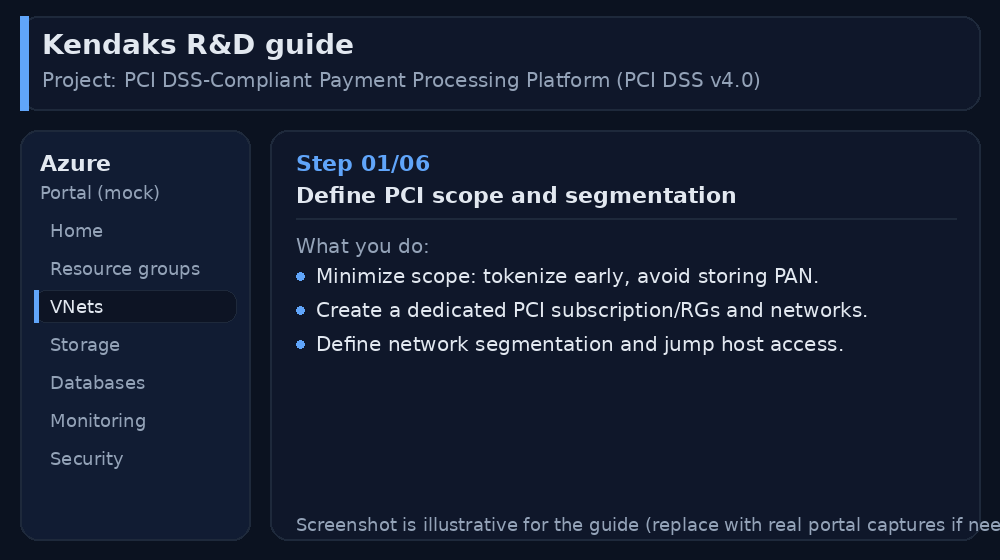
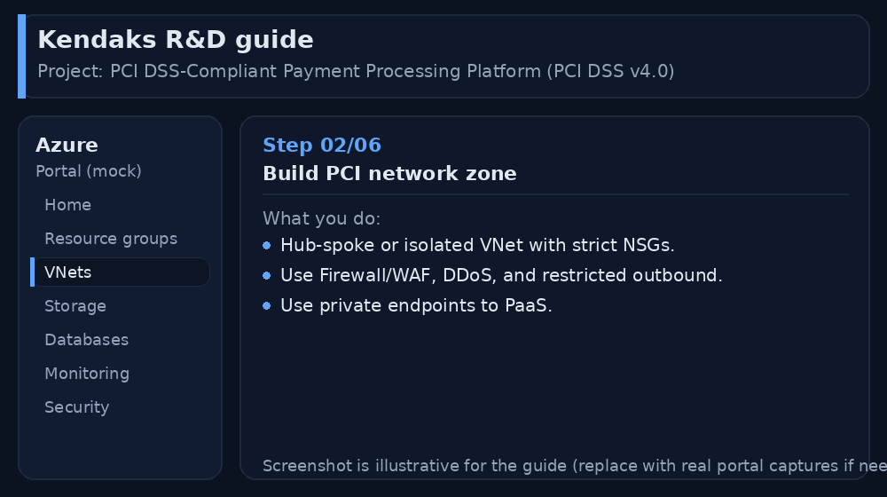
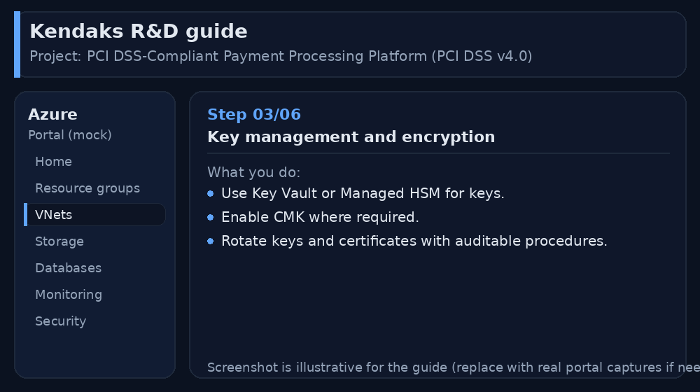
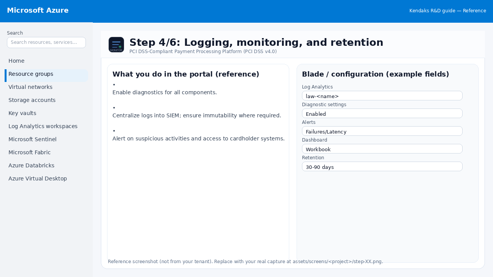
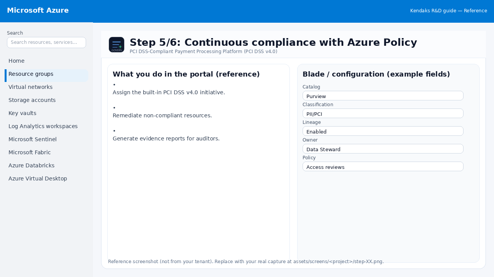
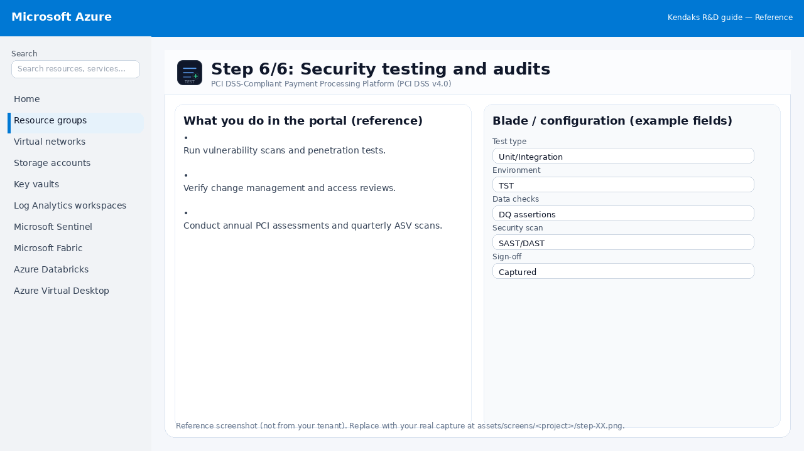

PCI DSS-Compliant Payment Processing Platform (PCI DSS v4.0)
Category: Compliance
Scenario: A payment workflow must be segmented, logged, and continuously assessed. Example: 'Kendaks Pay' processes card payments via a PCI zone, tokenizes data, and centralizes audit logs.
Architecture diagram
High-level view of the main components and data/control flows.
Low-level architecture diagram (Visio-style)
Implementation view (networking, security, ops). Click to open full size.
Low-level architecture details
(No low-level text provided.)
Step-by-step implementation
Step 1/6
Define PCI scope and segmentation

Reference portal screenshot (click to zoom). Replace with your tenant capture if needed.
Minimize scope: tokenize early, avoid storing PAN. Create a dedicated PCI subscription/RGs and networks. Define network segmentation and jump host access.
Validation checklist
Stakeholders have signed off the scope, SLAs, and data/security requirements. You have documented naming standards, environments, and ownership (RACI).
Step 2/6
Build PCI network zone

Reference portal screenshot (click to zoom). Replace with your tenant capture if needed.
Hub-spoke or isolated VNet with strict NSGs. Use Firewall/WAF, DDoS, and restricted outbound. Use private endpoints to PaaS.
Validation checklist
The target VNet/subnets/peerings/UDRs/NSGs are deployed with no errors. Connectivity test passes (e.g., Network Watcher connection troubleshoot / ping between subnets where allowed). Egress is controlled (traffic observed in Firewall logs if applicable).
Step 3/6
Key management and encryption

Reference portal screenshot (click to zoom). Replace with your tenant capture if needed.
Use Key Vault or Managed HSM for keys. Enable CMK where required. Rotate keys and certificates with auditable procedures.
Validation checklist
Security baseline applied (Defender/Policy/WAF/Firewall rules as applicable). No public endpoints unless explicitly approved; private endpoints verified where applicable. Alerts are configured for high-risk events.
Step 4/6
Logging, monitoring, and retention

Reference portal screenshot (click to zoom). Replace with your tenant capture if needed.
Enable diagnostics for all components. Centralize logs into SIEM; ensure immutability where required. Alert on suspicious activities and access to cardholder systems.
Validation checklist
Logs and metrics are flowing (check Log Analytics / Monitor). Alerts trigger correctly (test alert path to email/Teams/ITSM).
Step 5/6
Continuous compliance with Azure Policy

Reference portal screenshot (click to zoom). Replace with your tenant capture if needed.
Assign the built-in PCI DSS v4.0 initiative. Remediate non-compliant resources. Generate evidence reports for auditors.
Validation checklist
RBAC/roles are assigned to Entra groups (no direct user assignments). Policies/labels/lineage settings are enabled as required. Audit logs are enabled and flowing to the central workspace/SIEM.
Step 6/6
Security testing and audits

Reference portal screenshot (click to zoom). Replace with your tenant capture if needed.
Run vulnerability scans and penetration tests. Verify change management and access reviews. Conduct annual PCI assessments and quarterly ASV scans.
Validation checklist
UAT completed with representative users and scenarios. Performance meets baseline; issues tracked and remediated.